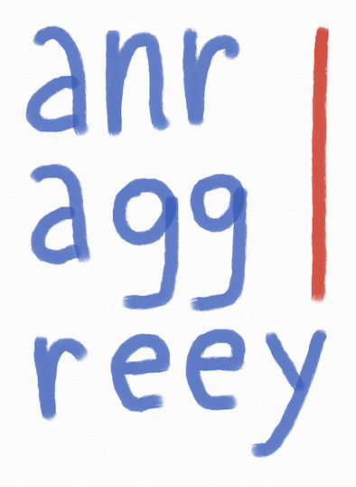

|  |
E-democracy is a form of government that allows everybody to participate in the development of laws. It has numerous benefits since it strengthens the integration of citizens in the political debate. Several on-line platforms exist; most of them propose to represent a debate in the form of a graph, which allows humans to better grasp the arguments and their relations. However, once the arguments are entered in the system, little or no automatic treatment is done by such platforms. Given the development of online consultations, it is clear that in the near future we can expect thousands of arguments on some hot topics, which will make the manual analysis difficult and time-consuming. The goal of this project is to use artificial intelligence, computational argumentation theory and natural language processing in order to detect the most important arguments, estimate the acceptability degrees of arguments and predict the decision that will be taken.
|